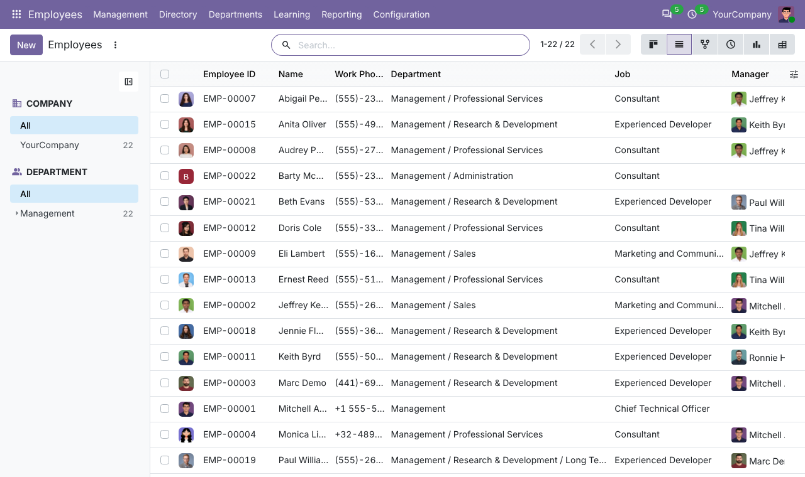
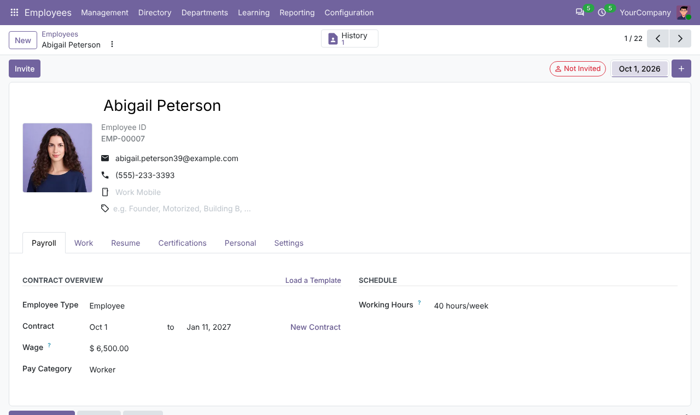
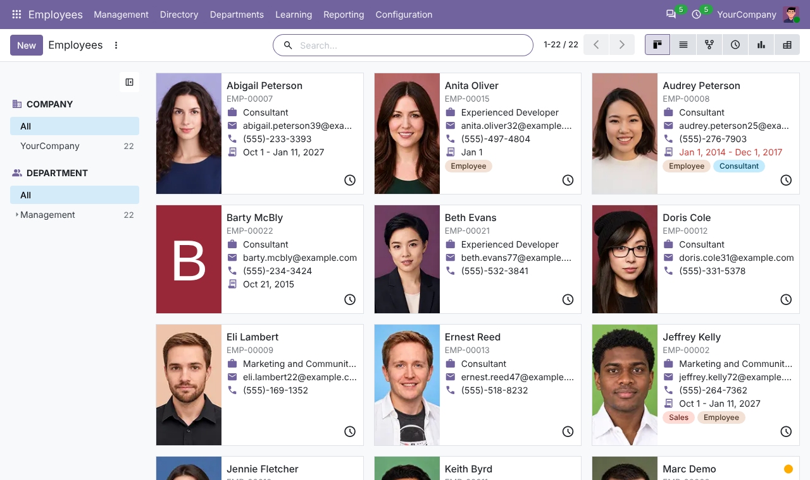
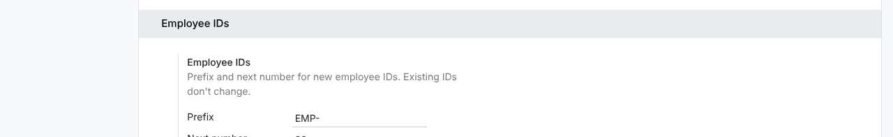

Give every employee a permanent ID, such as EMP-00001, with a prefix you choose.
Every new employee gets the next ID as soon as they are created. Existing employees get IDs when you install the app.
IDs never change when you edit an employee, and every ID is unique.
Change the prefix (for example EMP- to STAFF-) and the next number in Settings. Existing IDs keep their old prefix.
Every employee gets an Employee ID column you can sort and search.

The ID shows under the employee name.

The ID shows on each employee card too.

Go to Employees > Configuration > Settings > Employee IDs to set the prefix and the next number.
